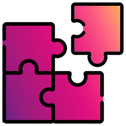

Boas-Vindas
Seja bem-vinda(o)!
Neste curso, você será orientado a conhecer os fundamentos da Educação a Distância (EaD) e a compreender como são planejados e desenvolvidos cursos autoinstrucionais. Ao longo da formação, apresentaremos conceitos importantes sobre design educacional, material didático, organização de conteúdos, aces sibilidade e uso de recursos digitais nos cursos on-line. O curso é voltado a profissionais da área da saúde e de áreas afins que desejam aprender mais sobre a produção de materiais educacionais para cursos on-line, contribuindo para o fortalecimento das estratégias de formação no âmbito da Fundação Oswaldo Cruz e do Sistema Único de Saúde. Com carga horária de 20 horas e ofertado totalmente on-line, na modalidade autoinstrucional, ele permite que você estude no seu próprio ritmo. Desejamos uma excelente experiência de aprendizagem. Bons estudos!
Estrutura do Curso
Curso Autoinstrucional
20 horas de carga horária

2 módulos
Ao iniciar um curso, é comum que surjam dúvidas sobre a melhor forma de orga- nizar os estudos e aproveitar plenamente os conteúdos apresentados... A seguir, você poderá conhecer as informações detalhadas sobre os módulos que compõem o curso.